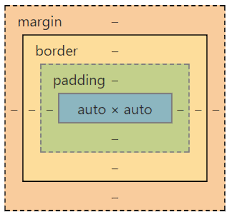

Todo elemento vísivel em um site esta dentro de uma caixa.
Todo elemento tem o CONTEUDO (TEXTO/IMAGEM) e uma BORDA (BORDER), entre o conteudo e a borda é possível criar um PADDING que funciona como um espaço para o conteudo não 'ficar grudado' na borda, ja entre a borda e a borda do proximo conteudo existe uma MARGIN. Fora da BORDA podemos criar um traçado, que denomina-se OUTLINE

Parágrafos também são exemplos de box-level, mas os links são exemplos de inline-level.
Vamos ver como tudo isso funciona.
Caixas box-level sempre ocupam toda a largura da tela e iniciam em uma nova linha. Ja caixas inline-level sempre ocupam o tamanho do conteudo e iniciam em mesma linha
EXEMPLOS: A tag div é uma caixa box-level e a tag span é uma caixa inline-level